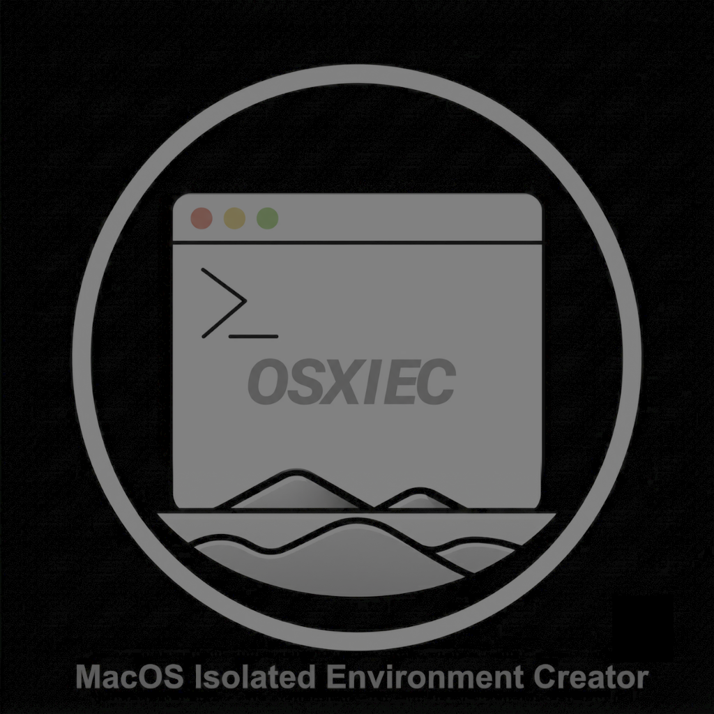
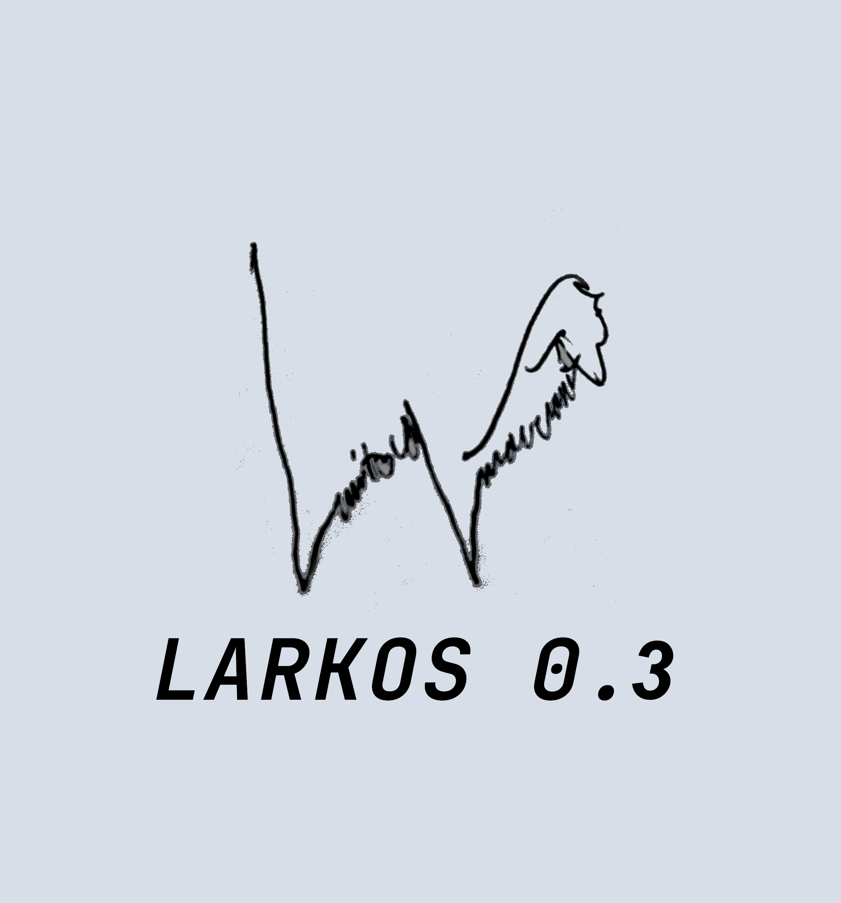

Okral
Osxiec

OSXIEC is a native Docker-like solution for macOS developed by Okerew. It leverages native macOS features to provide containerization capabilities, albeit with some limitations compared to Docker.

Biobridge
Biobridge is a Python library for simulating biological processes and systems — analyzing, visualising, and interacting with them.
pip install biobridge
MetalLikeCuda

Project/Organization aiming to provide more tools for Metal and make coding Metal shaders for AI better.
Larkos
The Lattice-Associated Recursive Knowledge Organization System — a decentralized neural web architecture simulating a neural network with hierarchical memory management, dynamic adaptation, and performance optimization. Neurons are decentralized and organized in layers, allowing them to interact and change over time beyond just states and weights, while maintaining a dynamic memory system.
Larkos 0.3

A self-learning model with a state-based fusion mechanism and graph attention that combines neurons, LLM embeddings, memory, and transformers into one coherent context. Built on the larkos architecture with imagination, affective systems, and more.